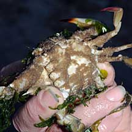
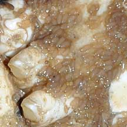
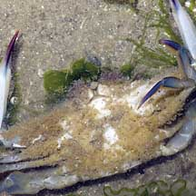

|
|
| barnacles text index | photo index |
| Phylum Arthropoda > Subphylum Crustacea > Class Cirripedia |
| Parasitic
barnacle Thompsonia sp. Family Thompsoniidae updated Mar 2020 Where seen? These gruesome animals are often seen growing in flower crabs (Portunus pelagicus). Infected crabs are usually encrusted with non-parasitic barnacles and other animals and seaweeds. They usually move weakly and are generally in poor shape. Features: This barnacle grows through the body of the host crab like a root system. The parasite does not kill the crab but it does affect the crab's reproductive system such that the crab becomes infertile. The parasitic barnacle eventually produces tiny egg sacs (0.5cm or less) that emerge through the crab's joints. |
|
 Chek Jawa, Oct 08  |
 Changi, Apr 05  Tiny egg sacs emerging through the joints. |
*Species are difficult to positively identify without examination of internal parts.
On this website, they are grouped by external features for convenience of display.
| Parasitic barnacles on Singapore shores |
On wildsingapore
flickr
|
Links
|